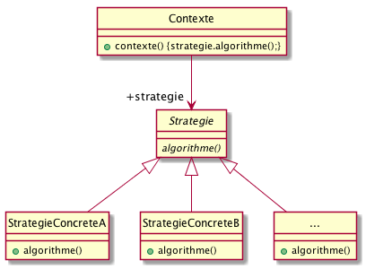

PreReq |
1. Je sais programmer en Java. 2. J’ai conscience qu’il faut réfléchir avant de se lancer dans le codage. 3. Je maîtrise les concepts objet de base (héritage, polymorphisme, …). |
ObjTD |
Comprendre ce qu’est une conception. |
Durée |
1 TD et 2 TP de 1,5h (sur 2 semaines). |
1. Rappel du cours
Ce TD étant le premier de l’année, aucune référence au cours de cette année n’est requise. Le cours du semestre dernier (M2104) est considéré comme acquis!
2. L’application SuperCanard
| Les exercices de ce TD sont tirés de l’excellent livre "Tête la première : Design Pattern". Bert Bates, Eric Freeman, Elisabeth Freeman, Kathy Sierra. Editions O’Reilly. 2005. |
2.1. Application existante
Soit l’application (un jeu de simulation de mare aux canards) SuperCanard dont le modèle est
décrit ci-dessous :
De nombreuses autres classes héritent de Canard.
|
Voici un exemple de code :
abstract public class Canard {
public void cancaner() {
System.out.println("Je cancane comme un Canard!");
}
public void nager() {
System.out.println("Je nage comme un Canard!");
}
abstract public void afficher();
}public class Colvert extends Canard {
public void afficher() {
System.out.println("Je suis un Colvert");
}
}2.2. Modification/Amélioration
Votre hiérarchie vous demande maintenant d’améliorer l’application pour être plus proche de la réalité.
Vous décidez d’ajouter une méthode voler() à vos canards :
abstract public class Canard {
public void cancaner() {
System.out.println("Je cancane comme un Canard!");
}
public void nager() {
System.out.println("Je nage comme un Canard!");
}
abstract public void afficher();
public void voler() {
System.out.println("Je vole comme un Canard!");
};
}2.3. Catastrophe!
La hiérarchie vous appelle en urgence : des canards en plastiques se mettent à voler dans l’application!
| Vous avez oublié que certains canards ne volaient pas! |
|
QUESTION
Complétez la phrase suivante : L'héritage c’est super pour faire de la …………. mais c’est plus problématique pour les aspects …………. |
2.4. Solution 1 : redéfinition de méthodes
Vous songez à une première solution simple : redéfinir la méthode voler()
dans les canards qui ne volent pas.
|
QUESTION
Complétez le code java suivant pour réaliser cette solution : |
|
QUESTION
Dans la liste ci-après, quels sont les inconvénients à utiliser l’héritage pour
définir le comportement de
|
2.5. Solution 2 : utilisation des interfaces
Vous songez à utiliser les interfaces pour améliorer le code.
|
QUESTION
|
2.6. Solution 3 : isoler ce qui varie
Vous êtes confrontés au même problème que dans le module MPA de ce début
d’année : LE CHANGEMENT!
Nous allons donc appliquer un bon principe de conception :
|
Principe de conception
Identifiez les aspects de votre code qui varient et séparez-les de ceux qui demeurent constants. |
|
QUESTION
Quels sont les deux principales choses qui varient dans votre code? |
2.6.1. Implémentation des comportements
Commençons par implémenter les comportements de manière séparée. Pour cela nous rappelons un bon principe que vous avez déjà utilisé :
|
Principe de conception
Programmer une interface, non une implémentation. |
|
QUESTION
En appliquant le principe ci-dessus, proposez une conception (diagramme de classe uniquement)
avec les classes et/ou interfaces (à vous de juger) suivantes : |
2.6.2. Intégration du comportement
Il nous faut maintenant relier les classes de canards à leur comportement.
|
QUESTION
|
2.6.3. Résumé et mise en oeuvre
Il est temps maintenant de prendre du recul et d’expérimenter les avantages de notre nouvelle conception.
|
QUESTION
|
2.7. Votre premier Design Pattern
2.7.1. La pattern Stratégie
En fait vous venez de mettre en oeuvre votre premier Design Pattern : le patron Strategy (Stratégie en français).
|
Design pattern : Stratégie (Strategy)
Stratégie définit une famille d’algorithmes, encapsule chacun d’eux et les rend interchangeables. Il permet à l’algorithme de varier indépendamment des clients qui l’utilisent.

Figure 3. Modèle UML du patron Strategy
|
{kind=link}
2.7.2. Mise en oeuvre et révision
|
On vous demande de reprendre un jeu d’aventure dont seul le modèle ci-dessous est fourni.
|
{kind=link}
Pour aller plus loin
Nous avons utilisé sans le nommer un troisième bon principe :
|
Principe de conception
Préférez la composition à l’héritage. |
|
QUESTION
Quelle différence entre notre conception finale et une implémentation du type : |
|
Mots-croisés
|
{kind=link}
|
QUESTION
Comment testeriez-vous la mise en oeuvre du patron Strategy? |
| N’hésitez pas à consulter un autre exemple, orienté "jeux de rôle", ici (p.116). |
About…
Document réalisé par Dut/Info-S3/M3105 via Asciidoctor (version 1.5.1) de 'Dan Allen', lui même basé sur AsciiDoc.
Pour l’instant ce document est libre d’utilisation et géré par la 'Licence Creative Commons'.
 licence Creative Commons Paternité - Partage à l'Identique 3.0 non transposé.
licence Creative Commons Paternité - Partage à l'Identique 3.0 non transposé.